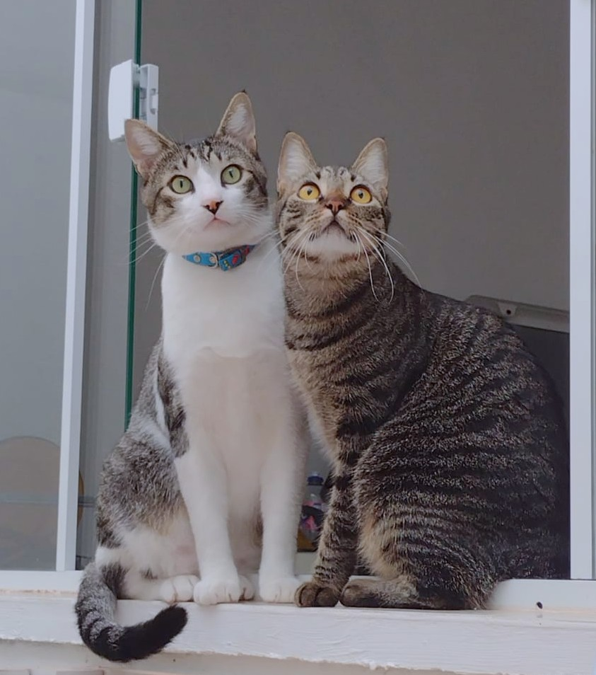

Richtig spielen
Kurze Einheiten mit Lauern, Hetzen, Fangen und danach Futter passen besser zur Katze als hektisches Wedeln vor der Nase.
Katzen sind Meister darin, Stress und Schmerz zu verbergen. Was nach einem pflegeleichten Tier aussieht, kann ein stilles Leiden sein.

Der Satz wird oft benutzt, um Einzelhaltung in der Wohnung bequem zu machen.
Viele Katzen brauchen passende Artgenossen, Rückzugsorte und eine Wohnung, die mehr bietet als Sofa und Futternapf.
Einer der hartnäckigsten Mythen: Katzen seien Einzelgänger. Falsch. Katzen sind Einzeljäger – sie jagen allein. Das heißt aber nicht, dass sie allein leben wollen. In der Natur bilden Katzen lose Gruppen, schlafen zusammen, putzen sich gegenseitig, teilen Ressourcen.
Besonders bei reiner Wohnungshaltung ist ein passender Artgenosse oft entscheidend für das Wohlbefinden. Betonung auf passend: Nicht jede Katze versteht sich mit jeder anderen. Alter, Temperament, Sozialisierung spielen eine große Rolle. Zwei Katzen zusammenzuwerfen und zu hoffen, dass es klappt, kann genauso stressig sein wie Einzelhaltung.
Spielzeug allein reicht nicht. Entscheidend ist, ob die Katze wählen, beobachten, jagen, klettern und sich ungestört zurückziehen kann.
Kurze Einheiten mit Lauern, Hetzen, Fangen und danach Futter passen besser zur Katze als hektisches Wedeln vor der Nase.
Fummelbretter, Suchspiele und versteckte Trockenfutterstücke bringen Beschäftigung in den Alltag, ohne die Katze zu überfordern.
Targettraining oder Pfote geben kann Spaß machen, wenn die Katze jederzeit gehen darf und die Einheit kurz bleibt.
Reine Wohnungshaltung kann funktionieren, wenn die Bedingungen stimmen. Aber sie ist nie dasselbe wie ein sicheres Revier mit Freigang.
Was Wohnungskatzen mindestens brauchen:
Die meisten sind Nachkommen von unkastrierten Freigängerkatzen. Eine einzige unkastrierte Katze kann in wenigen Jahren für Hunderte Nachkommen verantwortlich sein. Kastration ist der wirksamste Tierschutz, den es gibt.
Unkastrierte Kater markieren mit übel riechendem Urin, streunen, geraten in Revierkämpfe und tragen dabei oft schwere Verletzungen davon. Unkastrierte Katzen werden alle zwei bis drei Wochen rollig – ein Zustand, der mit erheblichem Stress, lautem Rufen und Unruhe verbunden ist. Dazu kommen ernsthafte Gesundheitsrisiken: Gebärmutterentzündung, Zysten und ein erhöhtes Tumorrisiko.
Kastration beseitigt diese Probleme, senkt den Stresslevel deutlich und schützt vor unkontrollierter Vermehrung. Die Kosten nach GOT 2022: Kater ca. 80–150 Euro, Katze ca. 120–250 Euro. Im Verhältnis zu den Folgekosten einer ungewollten Trächtigkeit oder einer Gebärmutterentzündung ist das wenig. Alles Weitere – auch die häufigsten Gegenargumente und warum sie nicht halten – auf der Seite Kastration.
In einigen Landkreisen gilt bereits eine Kastrations- und Kennzeichnungspflicht für Freigängerkatzen. Im Landkreis Mecklenburgische Seenplatte etwa in Röbel, Malchow und Waren. Im Landkreis Ludwigslust-Parchim hat der Kreistag eine Kastrationspflicht bisher abgelehnt – zum Nachteil der Streunerkatzen vor Ort.
Wenn eine Katze plötzlich weniger Kontakt sucht, ist das kein Charakterwechsel, sondern ein Warnsignal.
Das ist selten Protest. Häufig stecken Stress, Schmerzen oder Harnwegserkrankungen dahinter.
Lieber einmal zu viel zum Tierarzt als eine stille Erkrankung zu spät sehen.
Katzen sind Beutetiere. Schwäche zu zeigen hieße in der Natur: zum Opfer zu werden. Deshalb verbergen Katzen Schmerzen und Unwohlsein, bis es nicht mehr geht. Wenn eine Katze sichtbar krank wirkt, ist sie meistens schon länger krank.
Warnsignale, die auf Stress oder Krankheit hindeuten können:
Im Zweifel gilt: Lieber einmal zu oft zum Tierarzt als einmal zu wenig. Auf der Notfall-Seite findest du die wichtigsten Warnsignale und Erste-Hilfe-Maßnahmen.
| Posten | Einmalig | Jährlich |
|---|---|---|
| Anschaffung (Tierheim: Schutzgebühr) | 50–150 € | – |
| Erstausstattung (Klo, Kratzbaum, Näpfe, Spielzeug) | 150–400 € | – |
| Futter (hochwertiges Nassfutter) | – | 500–1.000 € |
| Streu | – | 100–250 € |
| Tierarzt (Impfung, Entwurmung, Vorsorge) | – | 100–300 € |
| Kastration | 80–250 € | – |
| Unvorhergesehenes (Zahnprobleme, Verletzungen, Chronisches) | – | 0–2.000 € |
| Gesamt über 15 Jahre | ca. 8.000–15.000 € | |
Bei zwei Katzen (empfohlen bei Wohnungshaltung) verdoppeln sich die laufenden Kosten annähernd. Auch bei Katzen gilt: Qualzuchtrassen wie Perserkatzen oder Scottish Folds verursachen höhere und häufigere Tierarztkosten.
Die Streunerhilfe Plau e. V. kümmert sich ehrenamtlich um Streunerkatzen im Raum Plau am See, Goldberg und Karow in Mecklenburg-Vorpommern. Im Jahr 2025 wurden 86 Katzen versorgt, 48 kastriert und 74 erfolgreich vermittelt – von einer Handvoll Ehrenamtlicher mit begrenzten Mitteln.
Streunerkatzen sind kein abstraktes Problem. Sie leben in Gartenanlagen, auf Bauernhöfen, an Futterstellen. Viele sind Nachkommen von Hauskatzen, deren Halter die Kastration „nicht für nötig" hielten. Jede unkastrierte Freigängerkatze verschärft das Problem.
Wa(h)re Haustier(liebe) ist ein privates Projekt – werbefrei, unabhängig und ehrenamtlich. Die laufenden Kosten für Hosting, Domain und Recherche tragen wir selbst. Wenn dir diese Seite geholfen hat, freuen wir uns über Unterstützung – für uns oder direkt für den Tierschutz:
Spenden an uns als Privatpersonen sind nicht steuerlich absetzbar. Die Streunerhilfe Plau e. V. ist ein eigenständiger gemeinnütziger Verein – dort ist deine Spende steuerlich absetzbar und fließt direkt in die Versorgung und Kastration von Streunerkatzen.